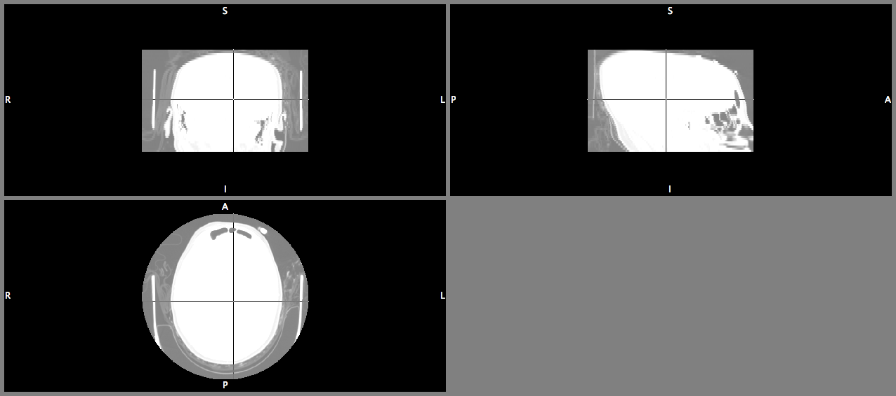
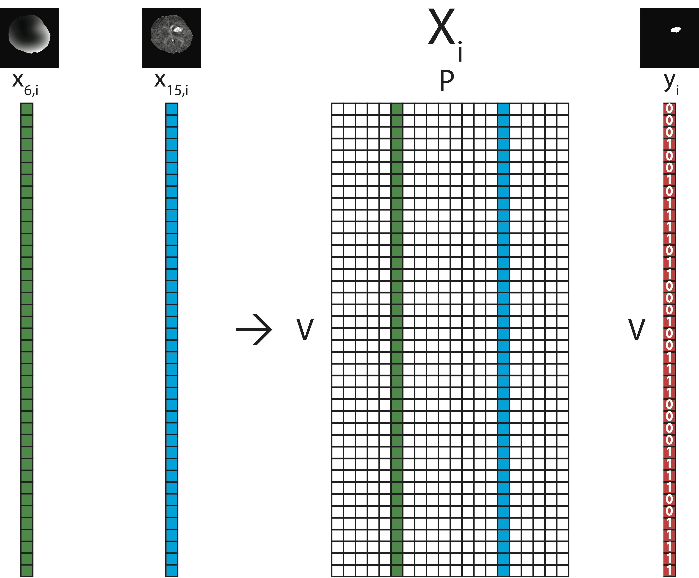
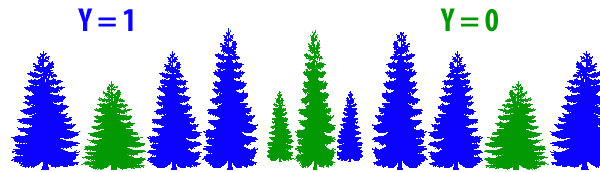

- Segmentation/Classification of Computed Tomography (CT) scans
- Brain segmentation
- Hemorrhage segmentation
- Neuroimaging and R: Neuroconductor
October 13, 2016
Overview of Work/Research
Overview of Work/Research
- Segmentation/Classification of Computed Tomography (CT) scans
- Brain segmentation
- Hemorrhage segmentation
- Neuroimaging and R: Neuroconductor
Neuroimaging Analysis in Stroke
The MISTIE Stroke Trial
- Minimally Invasive Surgery plus r-tPA for Intracerebral Hemorrhage Evacuation (MISTIE)
- Multi-center, multi-national Phase II clinical trial
- Alteplase (donated by Genentech)
- Patients with intracerebral hemorrhages (≥ 20 millilters)

PI: Dr. Dan Hanley 
When I say "stroke" I don't mean ischemic

- Ischemic stroke - clot blocks oxygen/nutrients
- Tissue dies
- ≈87% of strokes
Image from http://www.strokecenter.org/patients/about-stroke/ischemic-stroke/
When I say "stroke" I don't mean ischemic

- Ischemic stroke - clot blocks oxygen/nutrients
- Tissue dies
- ≈87% of strokes
Image from http://www.strokecenter.org/patients/about-stroke/ischemic-stroke/
Intracranial/Intracerebral Hemorrhage
- When a blood vessel ruptures into:
- Tissue ⇒ intracerebral hemorrhage (ICH)
- ≈ 13% of strokes

http://www.heartandstroke.com/site/c.ikIQLcMWJtE/b.3484153/k.7675/Stroke__Hemorrhagic_stroke.htm
X-ray Computed Tomography (CT) Scans


Image Representation: voxels (3D pixels)


Muschelli, John, Elizabeth Sweeney, and Ciprian Crainiceanu. "brainR: Interactive 3 and 4D Images of High Resolution Neuroimage Data." R JOURNAL 6.1 (2014): 42-48.
Terminology: Neuroimaging to Data/Statistics
- Segmentation ⇔ classification
- Image ⇔ 3-dimensional array
- composed of voxels
- Mask/Region of Interest ⇔ binary (0/1) image
- Registration ⇔ Spatial Normalization/Standarization
- "Lining up" Brains
Brain Segmentation of CT Scans
Problem: CT Scans Capture Everything

Brain Segmentation of CT Scans
Want to go from an image:

Brain Segmentation of CT Scans
Want to go from an image:
To a brain-extracted image: 
Publicly Available Code
- Muschelli, John, et al. "Validated automatic brain extraction of head CT images." NeuroImage 114 (2015): 379-385.
- R code: http://bit.ly/CTBET_RCODE - based on fslr
- bash code: http://bit.ly/CTBET_BASH

Larger ICH Volume ⇒ Worse Outcome
ICH Segmentation, Volume/Location Estimation
Want to go from a brain image:
To a binary hemorrhage mask: 
Subject Data used: 111 scans (1 Per Patient)
| Overall | |
|---|---|
| Age in Years: Mean (SD) | 60.8 (11.2) |
| Male: N (%) | 76 (68.5%) |
| Reader-Based Clot Location (%) | |
| Putamen | 68 (61.3) |
| Lobar | 33 (29.7) |
| Globus Pallidus | 6 ( 5.4) |
| Thalamus | 4 ( 3.6) |
| ICH Volume in mL: Mean (SD) | 37.4 (20.1) |
- Adults (inclusion criteria 18-80 years old)
- Mostly males
- Reader-classified Location of Hemorrhage
Step 1: Create Predictors of ICH 
Data Structure for One Patient

Step 2: Aggregate Data
Training Data Structure
- Stack together 10 randomly selected patients
- Train model/classifier on this design matrix

Step 3: Fit Models / Classifier
Let \(y_{i}(v)\) be the presence / absence of ICH for voxel \(v\) from person \(i\).
General model form: \[ P(Y_{i}(v) = 1) \propto f(X_{i}(v)) \]
Models Fit on the Training Data
- Logistic Regression: \(f(X_{i}(v)) = \text{expit} \left\{ \beta_0 + \sum_{k= 1}^{p} x_{i, k}(v)\beta_{k}\right\} \)
- Generalized Additive Model (Hastie, et al., 1990)
- fit using thin plate splines
- LASSO (Tibshirani, 1996; Friedman, et al., 2010): \[ \mathcal{L}\left(\left.Y_{i}(v) \right|\, f(X_i(v))\right) \propto \beta_0 + \sum_{k= 1}^{p} x_{i, k}(v) \beta_{k} + \lambda \sum_{k= 1}^{p} \left|\beta_{k}\right| \]
- Random Forests (Liaw, et al., 2002; Breiman, 2001)
\(f(X_{i}(v)) \propto\) 
Predicted Volume Estimates True Volume 
Predicted Volume Estimates True Volume 
Patient with Median Overlap in Validation Set

Shiny Application http://johnmuschelli.com/ich_segment.html 
Conclusions of Stroke Analyses
- We can segment ICH volume from CT scans
Workflow for the Analysis

Workflow for the Analysis

 Neuroconductor:
Neuroconductor:
A Neuroimaging R Repository
Hosted on GitHub and
Checked by Travis CI
Neuroconductor Goal:
Lower the bar to entry - just R

(A Lot of) Software Choices for fMRI Analysis

From Carp, Joshua. "The secret lives of experiments: methods reporting in the fMRI literature." Neuroimage 63.1 (2012): 289-300.
Number of Downloads (My CRAN packages)
From the cranlogs R package (as of October 10, 2016):

Neuroconductor Goal:
Provide package checks/rules/stability
- check against other imaging software (e.g. FSL)

Neuroconductor Goal:
R Data packages for testing
- images can be big
- use package system
Neuroconductor Goals
- Detailed vignettes/tutorials on how to actually perform an analysis
- Image analyses use all the "things R has to offer" (packaging system/reproducibility/etc.)
Under Development R Packages
- nitrc - download data from the NITRC repository
- MNITemplate\(^*\) - data of a population-level "template" image
- EveTemplate\(^*\) - data of a different template image
- kirby21 - data package with 2 subjects, 2 visits with multimodal imaging
- rcamino - interface to analyze DTI data
- msseg - MS lesion segmentation
- extrantsr - pipelines for structural imaging analysis
Not started yet
- hcp - interface with Human Connectome Project
- afnir - R port of AFNI software (No. 2 on the chart)
\(^*\) - working with Jean-Philippe Fortin on these
Neuroconductor
Hopeful Solutions
- Help improve reproducibility in imaging
- Standardize the syntax / R objects for imaging a bit (I'm realistic)
- Easily-accessible content
Problems
- More control over the workflow = more work (for us!)
- Users need external software (versions/installation)
- No control over external software
- Need the content (buy-in from the community)